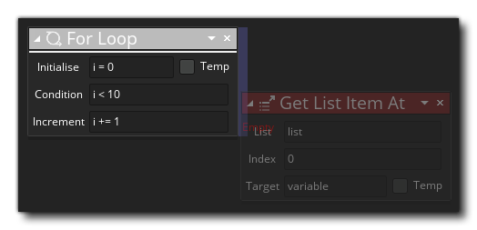

For For
For For
该For 动作用于执行仅在值达到给定条件时终止的循环。您需要给出一个初始值作为变量 (可以标记为临时局部变量-这通常是您想要的)，然后给出检查变量的条件 (例如，如果它小于某个值)，然后给出变量在每次迭代结束后需要增加的数值。基本流程如下：
- 你需要使用一个值初始化一个变量
- 然后设置条件以检查此变量
- 然后设置每次迭代结束后变量应该增加的数值
- 当你将“break”添加到循环中，这些循环将在每次迭代时运行，直到条件返回假或遇到“break”动作。
如果需要在一个循环种添加此动作，就像将动作添加到”if“中那样。例如：把动作块放在动作的一侧而不是下面。 
添加到此for循环动作的一侧的动作将按添加顺序依次执行。如果你想特定时候结束任何循环，则需要Break 动作。并且在使用for循环（For loop）时，每次迭代结束不一定必须增加变量，减少也可以，只要你给出的比较条件是适当的。例如，将初始变量设置为10，将条件设置为检查小于0，然后将增量值设置为-1，循环将迭代10次，从10倒数到0。

参数 描述 初值 初始化用于计数的变量（可以标记为临时局部变量）。 条件 用于检查是否需要终止循环的条件 增量 每次迭代时变量的增量（或减量）。

上述动作块代码执行了一个 for 循环来检查游戏手柄是否连接到了12个可用插槽中的任何一个。. 如果发现检测到了游戏手柄，则会将全局变量设置为当前插槽号，并且终止循环。